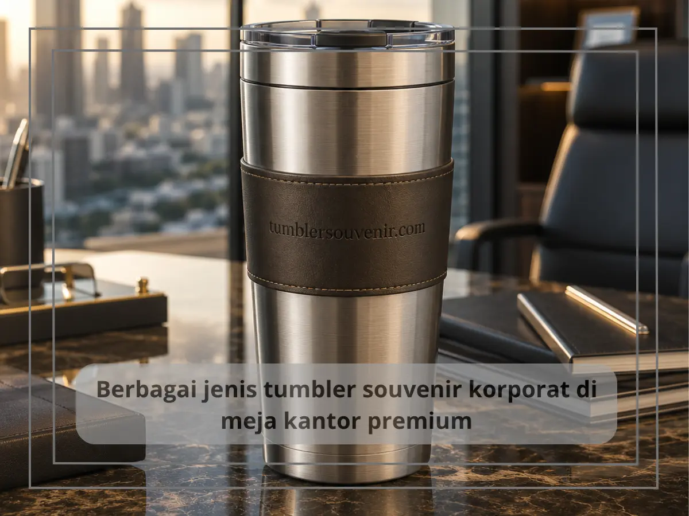
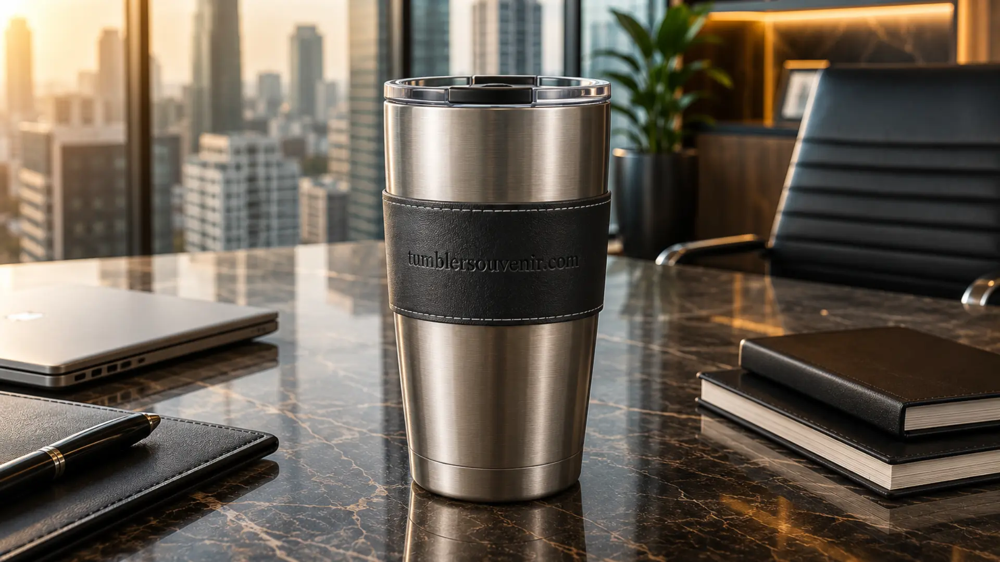

Jenis Tumbler Souvenir Korporat Paling Diminati Tahun 2026
Ringkasan
Jenis tumbler souvenir korporat paling diminati tahun 2026 adalah tumbler stainless steel double wall, tumbler infuser buah, dan tumbler minimalis warna solid. Ketiganya dipilih karena daya tahan tinggi, tampilan profesional, dan kemudahan disesuaikan dengan identitas brand perusahaan. Perusahaan yang ingin membangun kesan premium melalui souvenir kantor umumnya mengarah pada tiga jenis ini.
- Tumbler stainless steel double wall unggul dalam daya tahan dan kemampuan menjaga suhu.
- Tumbler infuser buah cocok untuk citra perusahaan yang mengusung gaya hidup sehat.
- Tumbler minimalis warna solid mudah dipadukan dengan warna corporate identity.
- Pemilihan jenis tumbler sebaiknya disesuaikan dengan tujuan dan target penerima souvenir.
Daftar Isi
- Tumbler Stainless Steel Double Wall untuk Kesan Premium
- Tumbler Infuser Buah untuk Citra Perusahaan yang Sehat
- Tumbler Minimalis Warna Solid untuk Fleksibilitas Branding
- Apakah Kapasitas dan Fitur Tambahan Memengaruhi Pilihan Jenis Tumbler?
- Bagaimana Menentukan Jenis Tumbler yang Tepat untuk Kebutuhan Perusahaan?
Tumbler Stainless Steel Double Wall untuk Kesan Premium
Tumbler stainless steel double wall adalah jenis yang paling banyak dipilih untuk souvenir korporat karena mampu menjaga suhu minuman tetap dingin atau hangat lebih lama dibanding tumbler biasa. Material stainless steel juga memberikan kesan kokoh dan tahan lama, yang secara tidak langsung mencerminkan citra perusahaan sebagai entitas yang solid dan terpercaya.
Dari sisi teknis, konstruksi double wall bekerja dengan memanfaatkan rongga udara di antara dua lapisan dinding tumbler sehingga perpindahan suhu ke bagian luar menjadi lebih lambat. Hal ini membuat permukaan luar tumbler tetap nyaman dipegang meski isinya panas atau dingin.
Dari sisi visual, permukaan stainless steel yang halus juga menjadi media cetak logo yang ideal, baik melalui teknik laser engraving untuk kesan elegan, maupun UV printing untuk logo full color. Kombinasi ini menjadikan tumbler stainless steel double wall favorit untuk gift eksekutif maupun souvenir seminar bertema korporat.
Menurut data industri promotional product secara umum, item berbahan stainless steel cenderung memiliki masa pakai yang jauh lebih panjang dibanding item plastik sekali pakai, sehingga nilai investasi per impression brand menjadi lebih efisien dalam jangka panjang.
Tumbler Infuser Buah untuk Citra Perusahaan yang Sehat
Tumbler infuser buah dirancang dengan tabung tambahan di bagian dalam untuk menaruh potongan buah, sehingga air minum mendapat aroma dan rasa alami tanpa tambahan gula. Jenis ini semakin diminati oleh perusahaan yang ingin menonjolkan citra peduli kesehatan karyawan maupun mitra bisnis.

Souvenir jenis ini sering digunakan pada acara wellness program, health talk internal, atau event yang mengusung tema gaya hidup sehat. Selain nilai fungsionalnya, tumbler infuser juga memiliki daya tarik visual yang berbeda dari tumbler pada umumnya, sehingga terasa lebih spesial sebagai gift.
Dari sisi material, tumbler infuser umumnya menggunakan bahan tritan atau kaca borosilikat yang food grade dan aman untuk kontak langsung dengan makanan maupun buah segar, sehingga tetap nyaman digunakan setiap hari.
Tumbler Minimalis Warna Solid untuk Fleksibilitas Branding
Tumbler minimalis dengan warna solid menjadi pilihan favorit karena kesederhanaan desainnya memudahkan penyesuaian dengan warna corporate identity perusahaan. Desain yang bersih dan tidak ramai membuat logo perusahaan menjadi elemen visual utama yang mudah dikenali.
Jenis ini juga fleksibel digunakan untuk berbagai segmen penerima, mulai dari karyawan internal, klien, hingga mitra bisnis lintas industri, karena tampilannya yang netral dan tidak terikat pada tema tertentu.
Selain itu, tumbler minimalis umumnya memiliki rentang harga yang lebih terjangkau dibanding jenis dengan fitur tambahan, sehingga sering dipilih untuk pemesanan dalam jumlah besar tanpa mengorbankan kesan profesional.
Apakah Kapasitas dan Fitur Tambahan Memengaruhi Pilihan Jenis Tumbler?
Kapasitas dan fitur tambahan turut memengaruhi pilihan jenis tumbler souvenir korporat, karena kebutuhan penggunaan setiap penerima bisa berbeda-beda. Tumbler dengan kapasitas lebih besar, misalnya di atas 500 ml, umumnya lebih disukai oleh penerima yang aktif beraktivitas di luar ruangan atau sering melakukan perjalanan dinas, karena tidak perlu sering mengisi ulang.
Fitur tambahan seperti tutup anti bocor, pegangan ergonomis, atau lubang sedotan juga menjadi pertimbangan penting, terutama untuk souvenir yang ditujukan bagi karyawan lapangan atau tim yang banyak beraktivitas mobile. Fitur-fitur ini menambah nilai fungsional tumbler tanpa mengurangi sisi estetika yang tetap relevan untuk kebutuhan branding.
Bagi perusahaan yang menargetkan penerima dengan gaya hidup aktif, kombinasi antara stainless steel double wall dengan fitur tutup anti bocor sering menjadi pilihan paling seimbang antara fungsi dan tampilan profesional.
Bagaimana Menentukan Jenis Tumbler yang Tepat untuk Kebutuhan Perusahaan?
Menentukan jenis tumbler yang tepat sebaiknya mempertimbangkan tujuan acara, target penerima, dan pesan brand yang ingin disampaikan. Untuk kesan eksekutif dan premium, stainless steel double wall lebih sesuai. Untuk citra sehat dan modern, tumbler infuser lebih relevan. Sementara untuk kebutuhan umum dengan anggaran lebih fleksibel, tumbler minimalis warna solid menjadi pilihan yang efisien.
Pertimbangan lain yang tidak kalah penting adalah konsistensi dengan merchandise korporat lain yang sudah pernah digunakan perusahaan, agar identitas visual brand tetap seragam dari waktu ke waktu.
Setiap jenis tumbler souvenir korporat memiliki keunggulan yang berbeda tergantung tujuan dan target penerimanya. Perusahaan yang ingin memastikan pilihan jenis dan spesifikasi tumbler sesuai kebutuhan dapat berkonsultasi langsung dan memesan custom melalui tumblersouvenir.com untuk mendapatkan hasil yang optimal.